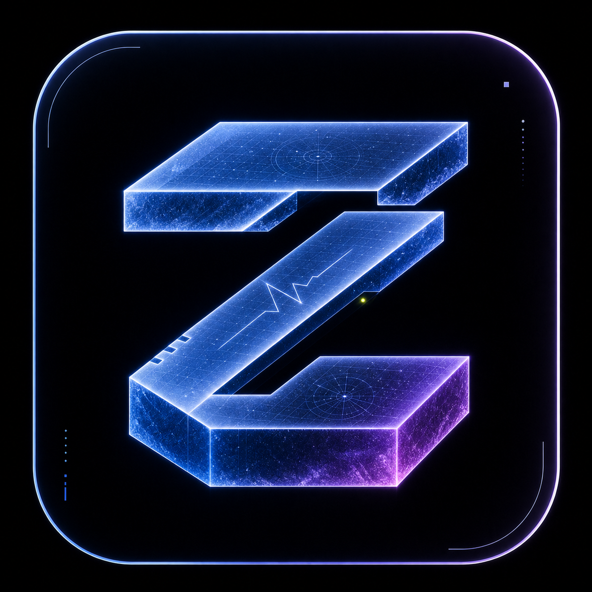
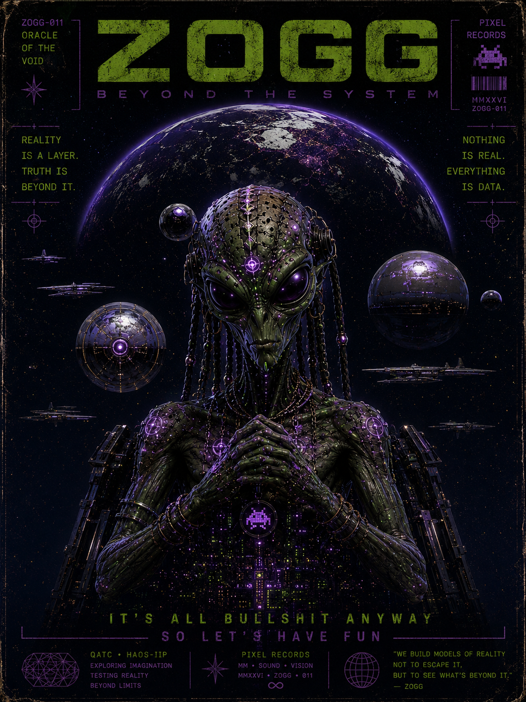
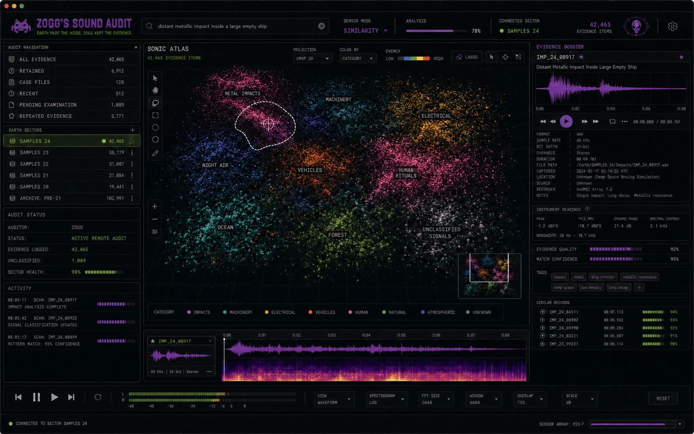

REAL RECORDS
The existing SAMPLES 24 archive stays where it is. The database indexes it; it does not swallow it.

ZOGG'SSOUND AUDIT / PIX-7 DOWNLOAD ↓NATIVE MACOS SOUND ARCHIVE / V0.1.0
Zogg kept the evidence. Search 42,465 local sounds, inspect their waveforms and tonality, audition instantly, then drag the original file straight into Ableton, Resolve or your software of choice.

SUBJECT: ZOGG / EXTRATERRESTRIAL AUDITORAUDITOR ON RECORD
Zogg audited Earth and kept the only part worth organizing: the noise. Every impact, machine, atmosphere and unexplained signal remains local, searchable and ready to leave the archive.
“Unknown is not sacred. Unexplained is not yours.”
THE LOCAL ARCHIVE
Filename, path, technical metadata, musical key and cached waveform evidence remain searchable without uploading a single byte.
The existing SAMPLES 24 archive stays where it is. The database indexes it; it does not swallow it.
Prewarmed CoreAudio playback means selecting a sound feels like an instrument, not a website.
Drag the filename, mini waveform or transport waveform to receive the original audio file.
Every selected sound receives a detailed waveform, transport scrubber, technical dossier and deterministic local tonality reading with confidence—not invented metadata.
NEXT AUDIT INSTRUMENT
The current release establishes the archive, playback, waveform, tonality and drag-out foundation. Similarity-space navigation is the next active milestone.

DEVELOPMENT PREVIEW / NOT YET IN V0.1.0Native. Local. Fast. Slightly suspicious of folders.
DOWNLOAD FOR MAC↓ SHA-256 CHECKSUM MACOS 15+ / APPLE SILICON